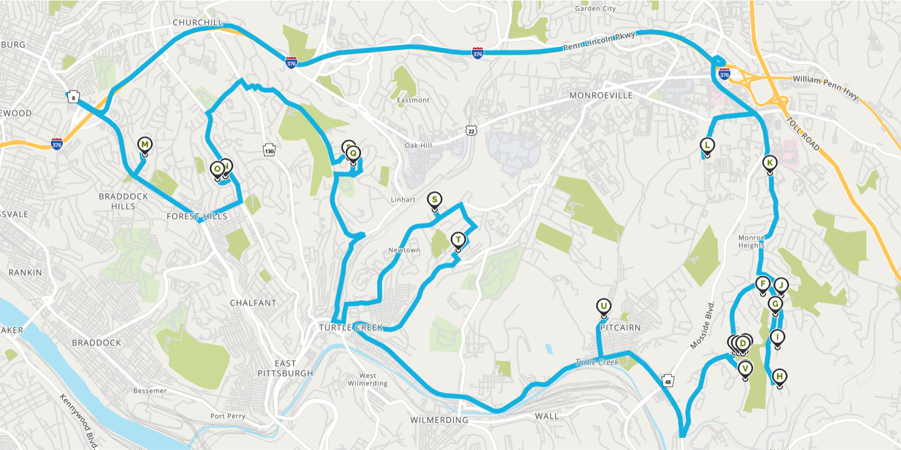

Travelling Landscaper Cloud Project
For my CS351 Cloud Computing course, we were assigned an open-ended course project, allowing essentially
anything related to the Cloud. People wrote research papers, built personal Cloud-gaming services, and
almost anything imaginable. I wanted to use Google Maps APIs to implement the famous Travelling Salesman
Problem and apply it to my previous summer job: designing an optimized landscaping route.
There were four stages of the software pipeline to turn a list of 40 addresses into two lists of correctly
ordered routes:
Here is an example of one of the routes that was generated (Source: MapQuest) 
This project, including the PowerPoint that I presented in class, are available on GitHub: https://github.com/Bmeshanko/Travelling-Landscaper